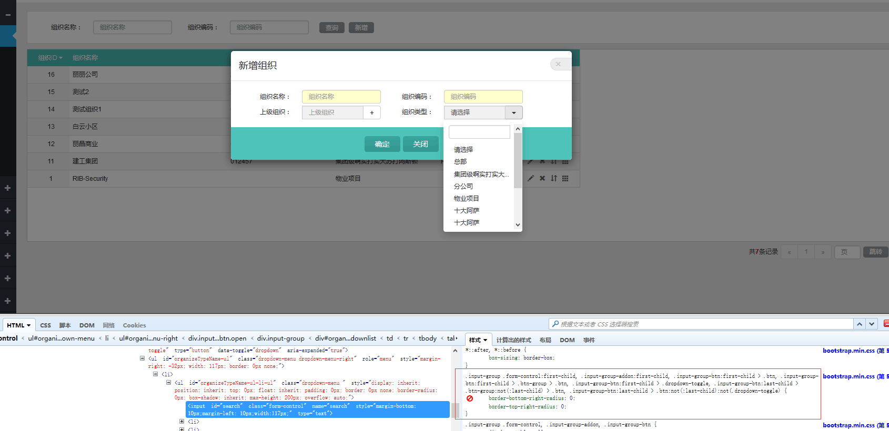
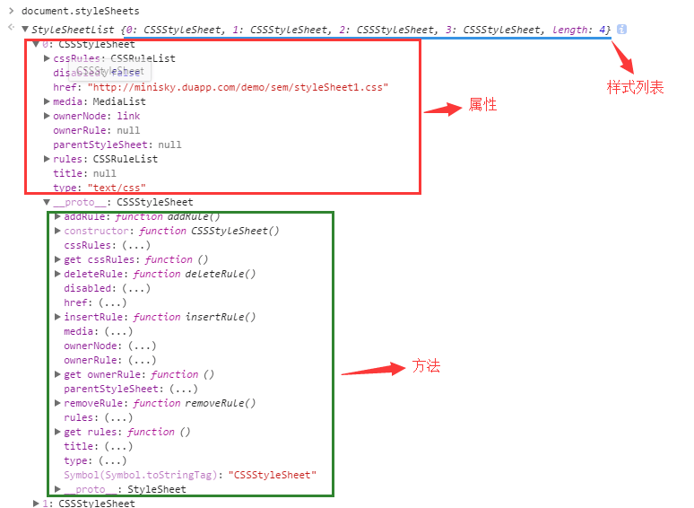

天凉好个秋
杭州开始变天了，很不幸，被突如其来的寒风伤着了，一把鼻涕，一把泪。在床上躺了好久之后，觉得还是写篇文章压压惊。前些天，有个大学同学问我，说他在项目中遇到一问题，有个效果的样式一直改不过来，并且截图给我，如下图：

他想把图中红色部分的样式去掉，严格来说就是禁用掉，于是他用Jquery提供的css方法，将图中两个样式设置为默认值，结果却没有用。代码也给我看了，确实直接$(selector).css(?,?),没啥问题，而且这个思路想想也对，可为什么不行呢？刚开始我也没反应过来，于是让他先跳过，给我点时间我给他找解决方案，然后我就乱七八糟的想了一通，忽然想到了一个问题。很明显，他上面是想要个圆角样式，由于用bootstrap引入了相应的class,导致被设置为了0，即没有圆角，那这样肯定不行啊，这个样式存在覆盖了原有带有圆角的样式，看来通过上面jquery的赋值是不行了，有的人可能说，那可以赋一个你想要的圆角值啊，是个好办法，确实能解决问题，但是身为一个程序员，怎么能固定写死呢，肯定要适应各种环境啊，万一值变了呢，难道还要跑回来再改代码，显然是不行的。
在经过一番激烈的胡思乱想之后，我这样的小白只找到了两种我认为可行的方法：
1. 修改原css文件
可以在原bootstrap.css文件中，找到这个样式，直接注释掉好了，省时省力，也不用再做其他的。不过，这只适用于其他页面也需不要这个样式的情况，万一有的地方需要，你给注释掉，哼哼，等着被其他同事打死吧。所以还是不提倡这样做。
2. 通过js来禁用掉目标样式
怎么禁？这是首要的问题，于是我们的document.styleSheets就闪亮登场了，可能很多人都不太熟悉这个对象，毕竟jquery提供了便捷的操作方式，这种看名字就让人感觉丑的东西，不到万不得已，一般是不会去关心的。但是不管你熟不熟悉，它就在那里，始终是有他存在的理由。这是个什么呢，话不多说，就截个图意会下：

它其实就是就是当前页面引入的样式文件列表，即一个数组对象。列表中每个对象都应一些属性和方法，看名字，就可以大概猜到它所对应的功能，所以真就不在对具体属性和方法做详细说明了，就直接切入正题，探讨如何解决上面问题的方法。不过，有点还是要提一下，现代浏览器（ie8及以下除外）和古董浏览器有的方法稍微有点差别，后边会提到。
看着图中对应的方法和属性，可以看到有个disabled属性，默认值为false,你可以设为true试试，它会将当前样式表禁用，也就是说当前这个对象所包含的所有样式都将不会起作用，所以一般不要用。然后再稍微往下看下，有个addRule，deleteRule，即就是添加新class样式或者删除。那么很明显我们这里将用到deleteRule这个方法，就是将你不想要的或者说你想禁用的样式删除掉，这样，上面那个问题也解决了。即假设你所删除的样式在当前页面，是第三个样式文件中的第2个样式，则有：
document.styleSheets[2].deleteRule(1);
然后此文over了，确实太简单了，说那么一大堆废话，就写了这么一行代码结束了，想想看确实不应该。于是问题就出现了，那么多样式我哪知道他是第几个啊，难不成代码拔下来数一下，显然，身为一个有理想的小白，肯定不能这么做，现在什么都讲究适应性，总的让我们这些拿来主义不用动脑子，直接拿来用吧。想想解决方案，不难，我们所能知道的是在文件中这个class的全称，即是你或者其他人写很规则选择器class。那么很明显，我们肯定想拿着这个名字去禁掉相关样式，其实想法很美好，实现也很简单，只需要再做个匹配就行了。先码一段代码再说：
var sheets = document.styleSheets，
isIE = document.addEventListener ? false : true;;
var selector = '你想匹配的class'；
for(var i=0;i<sheets.length;i++){
var rs = sheets[i][isIE ? 'rules' : 'cssRules'] || [];
for(var j=0;j<rs.length;j++){
if(rs[j].selectorText.replace(/\s*/ig,'') == selector.replace(/\s*/ig,'')){
sheets[i][isIE ? 'removeRule' : 'deleteRule'](j);
break;
}
}
}
其中变量selector即就是你想禁用的class,由于ie低版本写法上有点差异，所以需要做个兼容处理，另外，由于浏览器对样式名称格式解析和你写的稍微有那么一两个空格的差距，所以需要将空格去掉对比下。到这里，基本就简要的介绍了下document.styleSheets，当然，我们有时会用到addRule，具体用法就不说了，铺一段我写的一个方法，体会下就可以了：
function styleSheets(){
var sheets = document.styleSheets, //获得页面中所有样式
isIE = document.addEventListener ? false : true;
var insertRule = function(classStr){
var lastsheet = sheets[sheets.length -1];
lastsheet[isIE ? 'addRule' : 'insertRule'](classStr,lastsheet[isIE ? 'rules' : 'cssRules'].length);
}
var deleteRule = function(selector){
var targetInfo; //存储目标class信息
for(var i=0;i<sheets.length;i++){
var rs = sheets[i][isIE ? 'rules' : 'cssRules'] || [];//跨域引入的时候，取不到，会为空，所以默认为一个数组
for(var j=0;j<rs.length;j++){
if(rs[j].selectorText.replace(/\s*/ig,'') == selector.replace(/\s*/ig,'')){//由于浏览器解析出的样式格式和自己书写的稍微有点差异，所以清除空格作比对
targetInfo = {parentIndex:i,curIndex:j}
break;
}
}
}
console.log(targetInfo);
if(targetInfo){
sheets[targetInfo.parentIndex][isIE ? 'removeRule' : 'deleteRule'](targetInfo.curIndex);
}
}
return {
insertRule:insertRule,
deleteRule:deleteRule
}
}
可以将这段代码直接copy到你的项目中，直接执行下，如var styletool = styleSheets();然后使用styletool.deleteRule(selector)，然后你就可删除你想删除的样式，当然，能成功删除的，都是脸长得帅的，长得丑的，可能会发现，这方法压根没用，所以我不得不说下这些个方法的局限性：
- 如果你当前页面的样是都是通过<style></style>这样引入的，那么执行结果就是我们所想的那样。
- 如果，你的载入的外部css文件是和当前页面在一个域下面的，也就是不跨域的，那么它的执行结果也是入门所想。
以上两种情况此方法都是适用的。下面就来说说有问题的情况：
- 如果，如果你用的chrome浏览器,而且是只是随便写了静态页面测试，没有启动一个本地或者线上服务的情况下，你载入了一个随便写的css文件（线上文件除外），这样就不起作用了。不是方法不对，是因为浏览器不让你这么做，所以你需要起个本地服务或者在线上的一个服务。然后就成功了。当然，如果你是第一种情况，那么就不需要起服务了。
- 如果，若果你引入了其他域下的css文件，而且此刻你很想很想去禁用掉它其中的样式，那么，这个方法是行不通的，因为通过js读不到跨域样式文件中的规则，这就需要你真的看看外部引入的class是否真的很有必要，如果不是很特别（其实都不特别），你就稍微改下当前的代码结构，不用它的了。
上面的方法在google下亲测确实在规范之内是有用的，如果有什么问题，可以探讨下，或者对我刚开始抛出的问题有其他的解决方案，都可以探讨下，另外原测试代码在http://sadrun.duapp.com/demo/sem/download.html，这个页面本来是我想写一篇关于touch事件的文章，从实际项目中做的一个移动推广页面中扒出来的一个简略版，一并拿来在上面测试。最好是在控制台调出移动版页面看。直接调用 styletool.deleteRule(selector)就可测试。